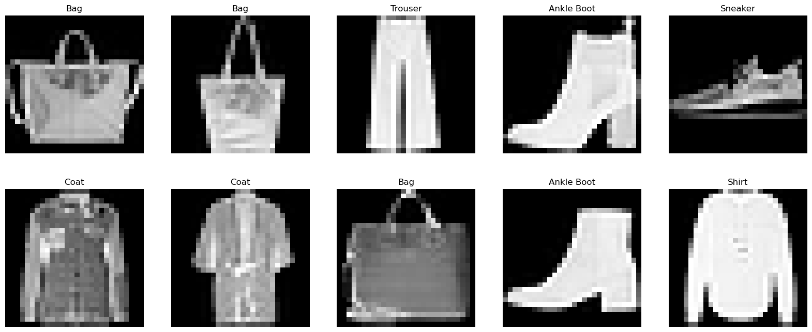

import numpy as np
import matplotlib.pyplot as plt
import torch
from torch.utils.data import DataLoader
from torch import nn
from torchvision import datasets
from torchvision.transforms import ToTensorANN_2
Step 1 : Load libraries & Datasts
# FashionMNIST 데이터 불러오기
training_data = datasets.FashionMNIST(
root = 'data',
train = True,
download = True,
transform = ToTensor()
)test_data = datasets.FashionMNIST(
root = 'data',
train = False,
download = True,
transform = ToTensor()
)Step 2 : Create DataLoader
train_dataloader = DataLoader(training_data, batch_size=64, shuffle=True)
test_dataloader = DataLoader(test_data, batch_size=64, shuffle=False)# Device
device = 'cuda' if torch.cuda.is_available() else 'cpu'
print(f'device = {device}')device = cudaEDA
print(training_data, '\n--------------------------\n', test_data)Dataset FashionMNIST
Number of datapoints: 60000
Root location: data
Split: Train
StandardTransform
Transform: ToTensor()
--------------------------
Dataset FashionMNIST
Number of datapoints: 10000
Root location: data
Split: Test
StandardTransform
Transform: ToTensor()train_features, train_labels = next(iter(train_dataloader))
print(f'Feature batch shape: {train_features.size()}')
print(f"Labels batch shape: {train_labels.size()}")Feature batch shape: torch.Size([64, 1, 28, 28])
Labels batch shape: torch.Size([64])len(training_data)60000img, label = training_data[0]
plt.imshow(img.squeeze(), cmap='gray')
print(f'label={label}')label=9
labels_map = {
0: "T-Shirt",
1: "Trouser",
2: "Pullover",
3: "Dress",
4: "Coat",
5: "Sandal",
6: "Shirt",
7: "Sneaker",
8: "Bag",
9: "Ankle Boot",
}figure = plt.figure(figsize = (20, 8))
cols, rows = 5, 2
for i in range(1, cols * rows +1):
sample_idx = torch.randint(len(training_data), size=(1,)).item()
img, label = training_data[sample_idx]
figure.add_subplot(rows, cols, i)
plt.title(labels_map[label])
print(labels_map[label])
plt.axis('off')
plt.imshow(img.squeeze(), cmap='gray')
plt.show()Bag
Bag
Trouser
Ankle Boot
Sneaker
Coat
Coat
Bag
Ankle Boot
Shirt
Step 3 : Set Network Structure
class NeuralNetwork(nn.Module):
def __init__(self):
super(NeuralNetwork, self).__init__()
self.flatten = nn.Flatten()
self.classifier = nn.Sequential(
nn.Linear(28*28, 128),
nn.ReLU(),
nn.Dropout(0.2),
nn.Linear(128, 10)
)
def forward(self, x):
x = self.flatten(x)
output = self.classifier(x)
return outputStep 4 : Create Model instacne
model = NeuralNetwork().to(device)
print(model)NeuralNetwork(
(flatten): Flatten(start_dim=1, end_dim=-1)
(classifier): Sequential(
(0): Linear(in_features=784, out_features=128, bias=True)
(1): ReLU()
(2): Dropout(p=0.2, inplace=False)
(3): Linear(in_features=128, out_features=10, bias=True)
)
)Model test
X = torch.rand(1, 28, 28, device=device)
output = model(X)
print(f'모델 출력 결과: {output}\n')
pred_probab = nn.Softmax(dim=1)(output)
print(f'Softmax 결과: {pred_probab}\n')
y_pred = pred_probab.argmax()
print(y_pred)모델 출력 결과: tensor([[ 0.2122, -0.0533, 0.4609, -0.1348, -0.2897, 0.0426, 0.2330, -0.0539,
-0.2371, 0.3135]], device='cuda:0', grad_fn=<AddmmBackward0>)
Softmax 결과: tensor([[0.1144, 0.0878, 0.1468, 0.0809, 0.0693, 0.0966, 0.1169, 0.0877, 0.0730,
0.1267]], device='cuda:0', grad_fn=<SoftmaxBackward0>)
tensor(2, device='cuda:0')Step 5 : Model compile
# Loss
loss = nn.CrossEntropyLoss()
# Optimizer
learning_rate = 1e-3
optimizer = torch.optim.Adam(model.parameters(), lr=learning_rate)Step 6 : Set train loop
def train_loop(train_loader, model, loss_fn, optimizer):
size = len(train_loader.dataset)
for batch, (X,y) in enumerate(train_loader):
X, y = X.to(device), y.to(device)
pred = model(X)
# loss calculation
loss = loss_fn(pred, y)
# backpropagation
optimizer.zero_grad()
loss.backward()
optimizer.step()
if batch % 100 == 0:
loss, current = loss.item(), batch * len(X)
print(f'loss: {loss:7>f} [{current:>5d}]/{size:5d}')Step 7 : Set test loop
def test_loop(test_loader, model, loss_fn):
size = len(test_loader.dataset)
num_batches = len(test_loader)
test_loss, correct = 0, 0
with torch.no_grad():
for X, y in test_loader:
X, y = X.to(device), y.to(device)
pred = model(X)
test_loss += loss_fn(pred, y).item()
correct += (pred.argmax(1)==y).type(torch.float).sum().item()
test_loss /= num_batches
correct /= size
print(f'Test Error: \n Accuracy: {(100*correct):>0.1f}%, Avg loss: {test_loss:8f}\n')Step 8 : Run model
epochs = 10
for i in range(epochs):
print(f'Epoch {i+1} \n--------------------------')
train_loop(train_dataloader, model, loss, optimizer)
test_loop(test_dataloader, model, loss)
print("Done")Epoch 1
--------------------------
loss: 0.431373 [ 0]/60000
loss: 0.587412 [ 6400]/60000
loss: 0.583656 [12800]/60000
loss: 0.526607 [19200]/60000
loss: 0.425904 [25600]/60000
loss: 0.559104 [32000]/60000
loss: 0.255318 [38400]/60000
loss: 0.401609 [44800]/60000
loss: 0.359597 [51200]/60000
loss: 0.415519 [57600]/60000
Test Error:
Accuracy: 84.0%, Avg loss: 0.441000
Epoch 2
--------------------------
loss: 0.396597 [ 0]/60000
loss: 0.282736 [ 6400]/60000
loss: 0.348952 [12800]/60000
loss: 0.394269 [19200]/60000
loss: 0.309174 [25600]/60000
loss: 0.406731 [32000]/60000
loss: 0.255115 [38400]/60000
loss: 0.464652 [44800]/60000
loss: 0.266001 [51200]/60000
loss: 0.316354 [57600]/60000
Test Error:
Accuracy: 86.0%, Avg loss: 0.396377
Epoch 3
--------------------------
loss: 0.343163 [ 0]/60000
loss: 0.417957 [ 6400]/60000
loss: 0.361057 [12800]/60000
loss: 0.290214 [19200]/60000
loss: 0.439867 [25600]/60000
loss: 0.573623 [32000]/60000
loss: 0.358405 [38400]/60000
loss: 0.280711 [44800]/60000
loss: 0.403463 [51200]/60000
loss: 0.364402 [57600]/60000
Test Error:
Accuracy: 85.9%, Avg loss: 0.389022
Epoch 4
--------------------------
loss: 0.269444 [ 0]/60000
loss: 0.317166 [ 6400]/60000
loss: 0.371522 [12800]/60000
loss: 0.389202 [19200]/60000
loss: 0.290166 [25600]/60000
loss: 0.557429 [32000]/60000
loss: 0.463130 [38400]/60000
loss: 0.320192 [44800]/60000
loss: 0.230014 [51200]/60000
loss: 0.221253 [57600]/60000
Test Error:
Accuracy: 86.5%, Avg loss: 0.380155
Epoch 5
--------------------------
loss: 0.378960 [ 0]/60000
loss: 0.463637 [ 6400]/60000
loss: 0.203711 [12800]/60000
loss: 0.376729 [19200]/60000
loss: 0.376216 [25600]/60000
loss: 0.302987 [32000]/60000
loss: 0.401179 [38400]/60000
loss: 0.283290 [44800]/60000
loss: 0.314023 [51200]/60000
loss: 0.380436 [57600]/60000
Test Error:
Accuracy: 86.1%, Avg loss: 0.391101
Epoch 6
--------------------------
loss: 0.324956 [ 0]/60000
loss: 0.376954 [ 6400]/60000
loss: 0.286267 [12800]/60000
loss: 0.302243 [19200]/60000
loss: 0.253790 [25600]/60000
loss: 0.259367 [32000]/60000
loss: 0.489078 [38400]/60000
loss: 0.244414 [44800]/60000
loss: 0.335011 [51200]/60000
loss: 0.284465 [57600]/60000
Test Error:
Accuracy: 86.4%, Avg loss: 0.392578
Epoch 7
--------------------------
loss: 0.470740 [ 0]/60000
loss: 0.352301 [ 6400]/60000
loss: 0.215639 [12800]/60000
loss: 0.214226 [19200]/60000
loss: 0.198628 [25600]/60000
loss: 0.290468 [32000]/60000
loss: 0.396786 [38400]/60000
loss: 0.337734 [44800]/60000
loss: 0.209183 [51200]/60000
loss: 0.446850 [57600]/60000
Test Error:
Accuracy: 86.5%, Avg loss: 0.375429
Epoch 8
--------------------------
loss: 0.325714 [ 0]/60000
loss: 0.252096 [ 6400]/60000
loss: 0.266274 [12800]/60000
loss: 0.404169 [19200]/60000
loss: 0.398270 [25600]/60000
loss: 0.240059 [32000]/60000
loss: 0.345725 [38400]/60000
loss: 0.339798 [44800]/60000
loss: 0.232539 [51200]/60000
loss: 0.371980 [57600]/60000
Test Error:
Accuracy: 87.3%, Avg loss: 0.363998
Epoch 9
--------------------------
loss: 0.275302 [ 0]/60000
loss: 0.459145 [ 6400]/60000
loss: 0.477752 [12800]/60000
loss: 0.368110 [19200]/60000
loss: 0.166666 [25600]/60000
loss: 0.340989 [32000]/60000
loss: 0.412024 [38400]/60000
loss: 0.255185 [44800]/60000
loss: 0.370468 [51200]/60000
loss: 0.383511 [57600]/60000
Test Error:
Accuracy: 87.2%, Avg loss: 0.362548
Epoch 10
--------------------------
loss: 0.163738 [ 0]/60000
loss: 0.234758 [ 6400]/60000
loss: 0.498840 [12800]/60000
loss: 0.502605 [19200]/60000
loss: 0.460932 [25600]/60000
loss: 0.459421 [32000]/60000
loss: 0.243460 [38400]/60000
loss: 0.231028 [44800]/60000
loss: 0.239964 [51200]/60000
loss: 0.273228 [57600]/60000
Test Error:
Accuracy: 87.0%, Avg loss: 0.363198
DoneStep 9 : Save & load model
parameter만 저장하고 불러오기
torch.save(model.state_dict(), 'model_weights.pth')model2 = NeuralNetwork().to(device)
print(model2)NeuralNetwork(
(flatten): Flatten(start_dim=1, end_dim=-1)
(classifier): Sequential(
(0): Linear(in_features=784, out_features=128, bias=True)
(1): ReLU()
(2): Dropout(p=0.2, inplace=False)
(3): Linear(in_features=128, out_features=10, bias=True)
)
)model2.load_state_dict(torch.load('model_weights.pth'))<All keys matched successfully>model2.eval()
test_loop(test_dataloader, model2, loss)Test Error:
Accuracy: 88.1%, Avg loss: 0.334797
Model 전체를 저장하고 불러오기
torch.save(model, 'model.pth')model3 = torch.load('model.pth')model3.eval()
test_loop(test_dataloader, model3, loss)Test Error:
Accuracy: 88.1%, Avg loss: 0.334797